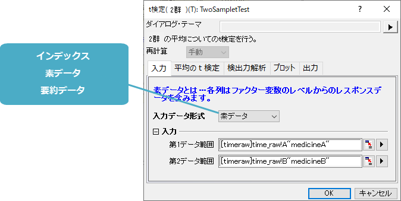
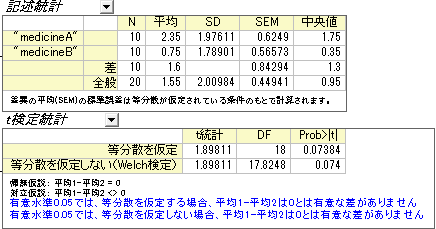

関連する動画：t-Test（英語のみ）
関連する動画：t-Test（英語のみ）
 関連する動画：t-Test（英語のみ）
関連する動画：t-Test（英語のみ）
仮説検定は、標本のパラメータが正しいかどうかを調べたり、2つの母集団の状態が等しいかかどうかを検定するのに使用することができます。
仮説検定は、母集団の平均(母平均)がある値に等しいか、またはそうでないかのように、対立仮説と反対の帰無仮説を打ち当て、そして、帰無仮説が真の場合の適切な統計量を使用して確率を計算します。確率に基づいて帰無仮説を棄却するか、棄却しないかという結論を出します。
|  |  |
|
このセクションで説明している項目 |